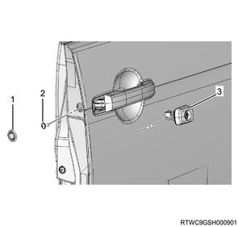
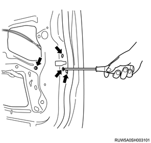
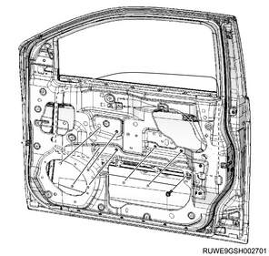
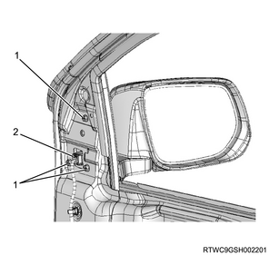
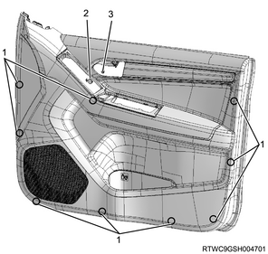
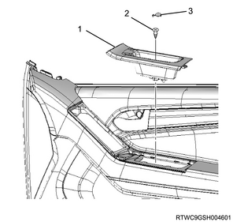
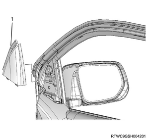

1. Install the door harness to the front door.
1. Install the outside handle to the front door.
1. Install the key cylinder to the outside handle.
Note
Tightening torque： 6 N・m { 0.6 kgf・m / 53 lb・in }

1. Install the door lock assembly to the front door.
Note
Tightening torque： 7 N・m { 0.7 kgf・m / 62 lb・in }

1. Install the glass-run rear channel to the front door.
Note
1. Install the glass-run to the front door.
1. Install the window regulator to the front door.
Note
Tightening torque： 9 N・m { 0.9 kgf・m / 80 lb・in }
Note
1. Install the front door glass to the front door.
Note
Tightening torque： 9 N・m { 0.9 kgf・m / 80 lb・in }

1. Connect the inside handle to the door lock cable.
1. Install the waterproof sheet to the front door.
1. Install the weather strip to the front door.
Note
1. Install the door speaker to the front door.
Note
1. Install the bracket to the front door.
Note
1. Install the outer waist seal to the front door.
1. Install the door mirror assembly to the front door.
Note
Tightening torque： 9 N・m { 0.9 kgf・m / 80 lb・in }

1. Install the front door trim panel to the front door.
Note
Tightening torque： 2 N・m { 0.2 kgf・m / 18 lb・in }

1. Install the door pull case to the front door.
Note

1. Install the door mirror cover to the front door.

1. Connect the harness connector to the power window switch.